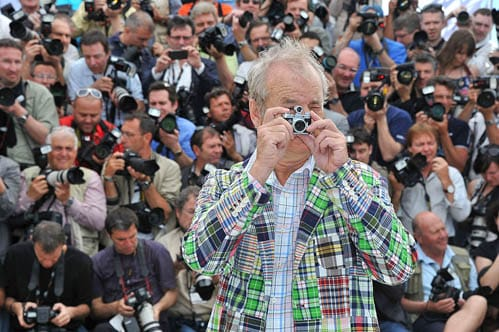

One’s destination is never a place, but a new way of seeing things. — Henry Miller
Огурец

Пляска Смерти
Аркадий Володось исполняет симфоническую поэму "Пляска Смерти" Сен-Санса в транскрипции для фортепиано Владимира Горовица.
Еще Билла Мюррея

Билл Мюррей в Каннах

Simple and Usable Web, Mobile, and Interaction Design
Прочитал отличную книгу по юзабилити. Книга небольшая, написана просто и понятно, и я осмелюсь ее рекомендовать всем, кому интересна данная тематика.
Bonne Nuit!
Совершенно какая-то нереально кайфовая детская игруха! Особенно, если на французском слушать :) И еще одна
Apolo 17

Цветные фотки c луны. via.
Carnage (2011)

Хорошее кино.
J'aime regarder les filles (2011)

Очень приятное кино! Рекомендую смотреть с оригинальной дорожкой.